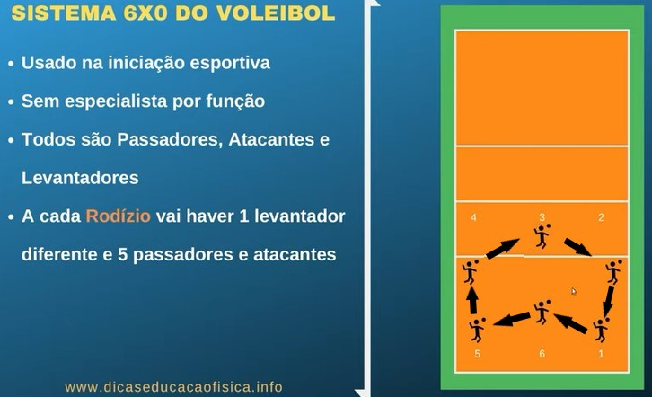
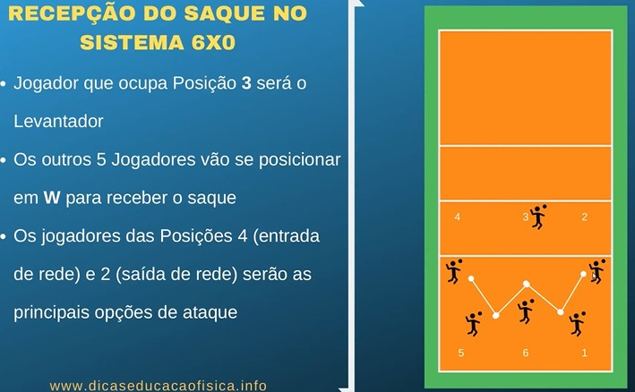
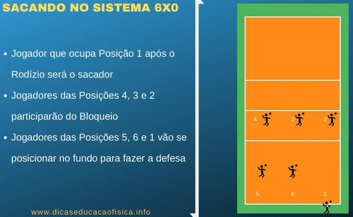

6-0
🏐
vôlei.com
6 x 0
No sistema 6x0, também chamado de sistema 6x6, todos farão a função tanto de levantadores como de atacantes ou defensores. É o sistema mais simples de todos, é normalmente usado em equipes que estão iniciando o treinamento no esporte.
 
